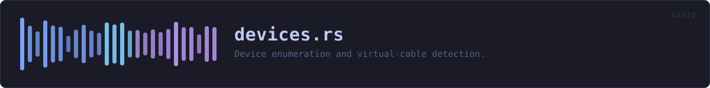

crates/veilvoice-audio/src/devices.rs
veilvoice-audio · 383 lines · read the source here · or on GitHub
Enumerating audio devices, and guessing which of them are virtual cables.
What this is for
Live scrambling is only useful if the veiled voice can be routed into something else -- a call, a stream, a recorder. The way that is done on every desktop platform is a virtual audio cable: a driver that presents a playback device on one side and a microphone on the other, so anything that can select a microphone can receive VeilVoice's output.
So the list this module produces is not merely a list. Picking the wrong output device is the single most common way for live mode to appear broken while working perfectly, and the whole reason DeviceInfo::is_virtual_cable exists is to put the right entry in front of the user.
The detection is name matching, and that is a limitation, not an oversight
There is no portable way to ask an audio device whether it is virtual. CPAL does not expose it because the underlying APIs largely do not either. So VIRTUAL_CABLE_HINTS matches on name fragments, which means:
- a cable this list has never heard of is reported as an ordinary device;
- a real device whose name happens to contain "loopback" or "virtual" is flagged when it should not be.
Both are wrong in the harmless direction: the flag reorders and annotates a list, it never restricts what the user may choose. A heuristic that hides options would be a different and worse thing than one that highlights them, and this is deliberately the second.
The alternative -- showing an unsorted list of identically named endpoints and letting the user find the right one -- was tried and is worse.
Enumeration can fail, and does
Device lists come from the OS and are not stable: a device can disappear between being listed and being opened, a host may have no devices at all, and on Linux a machine with no sound server is entirely normal. Every function here returns a crate::Error rather than panicking or quietly returning an empty list, because an empty list and a failed query mean very different things to somebody trying to work out why they cannot be heard.
In plain words
This asks your computer which microphones and speakers it has, and works out which of them are virtual cables.
A virtual cable is a small piece of software that pretends to be a speaker on one side and a microphone on the other. It is how a veiled voice gets into a call: VeilVoice plays into the cable, and the calling program picks the cable as its microphone and never knows the difference.
Working out which device is a cable is done by recognising the names the common ones use, so it is a good guess rather than a certainty. Nothing depends on the guess being right: it decides which device is suggested, never which ones you are allowed to choose.
WHAT THIS FILE CONTAINS
383 lines defining 10 functions (4 public), 1 type and 1 constant. Everything below is read out of the source, so it cannot disagree with the code.
The types it owns.
struct Describedline 111 · A device as list shows it and open finds it.
What happens when it runs. These are the ways in: public, and nothing else in this file calls them, so they are what an outside caller reaches first.
find_virtual_cableline 222 · Find the first output device that looks like a virtual audio cable.
reacheslist,describe,every,listed_names,looks_virtual,name_of_optname_ofline 232 · The name of an opened device, or a placeholder when the OS will not say.
reachesname_of_optopenline 238 · Look up a device by the name list gave it, or the host default when name is None.
reachesevery,position_of,listed_names
WHAT CALLS WHAT
The functions this file defines, and the calls between them. An edge means the callee's name appears, called, inside the caller's body. This is a syntactic reading, not a type-resolved one.
The same graph as Mermaid source
%%{init: {"theme":"base","themeVariables":{"background":"#1a1b26","primaryColor":"#1f2335","primaryTextColor":"#c0caf5","primaryBorderColor":"#7aa2f7","secondaryColor":"#16161e","tertiaryColor":"#16161e","lineColor":"#737aa2","textColor":"#c0caf5","mainBkg":"#1f2335","nodeBorder":"#7aa2f7","clusterBkg":"#16161e","clusterBorder":"#2f3549","fontFamily":"ui-monospace, SFMono-Regular, Consolas, monospace","fontSize":"14px"}}}%%
flowchart TD
n_looks_virtual["looks_virtual<br/>line 87"]
n_name_of_opt["name_of_opt<br/>line 97"]
n_describe["describe<br/>line 119"]
n_listed_names["listed_names<br/>line 132"]
n_position_of["position_of<br/>line 154"]
n_every["every<br/>line 172"]
n_list["list<br/>line 188"]
n_find_virtual_cable(["find_virtual_cable<br/>line 222"])
n_name_of(["name_of<br/>line 232"])
n_open(["open<br/>line 238"])
n_describe --> n_name_of_opt
n_find_virtual_cable --> n_list
n_list --> n_describe
n_list --> n_every
n_list --> n_listed_names
n_list --> n_looks_virtual
n_name_of --> n_name_of_opt
n_open --> n_every
n_open --> n_position_of
n_position_of --> n_listed_names
click n_looks_virtual href "https://github.com/tilas01/veilvoice/blob/main/crates/veilvoice-audio/src/devices.rs#L87" "open the source"
click n_name_of_opt href "https://github.com/tilas01/veilvoice/blob/main/crates/veilvoice-audio/src/devices.rs#L97" "open the source"
click n_describe href "https://github.com/tilas01/veilvoice/blob/main/crates/veilvoice-audio/src/devices.rs#L119" "open the source"
click n_listed_names href "https://github.com/tilas01/veilvoice/blob/main/crates/veilvoice-audio/src/devices.rs#L132" "open the source"
click n_position_of href "https://github.com/tilas01/veilvoice/blob/main/crates/veilvoice-audio/src/devices.rs#L154" "open the source"
click n_every href "https://github.com/tilas01/veilvoice/blob/main/crates/veilvoice-audio/src/devices.rs#L172" "open the source"
click n_list href "https://github.com/tilas01/veilvoice/blob/main/crates/veilvoice-audio/src/devices.rs#L188" "open the source"
click n_find_virtual_cable href "https://github.com/tilas01/veilvoice/blob/main/crates/veilvoice-audio/src/devices.rs#L222" "open the source"
click n_name_of href "https://github.com/tilas01/veilvoice/blob/main/crates/veilvoice-audio/src/devices.rs#L232" "open the source"
click n_open href "https://github.com/tilas01/veilvoice/blob/main/crates/veilvoice-audio/src/devices.rs#L238" "open the source"
classDef entry fill:#1f2335,stroke:#7aa2f7,color:#c0caf5
class n_find_virtual_cable,n_name_of,n_open entry
classDef api fill:#1f2335,stroke:#7dcfff,color:#c0caf5
class n_list api
classDef helper fill:#1f2335,stroke:#bb9af7,color:#c0caf5
class n_looks_virtual,n_name_of_opt,n_describe,n_listed_names,n_position_of,n_every helperThis site loads no third-party script, so it cannot run Mermaid; the diagram above is the same nodes and edges drawn by the generator instead. GitHub renders the source below directly.
ITEMS
| Item | Line | Documentation |
|---|---|---|
VIRTUAL_CABLE_HINTS const | 70 | Name fragments used by the common virtual audio cables. |
looks_virtual fn | 87 | Whether a device's name suggests it is a virtual cable rather than real hardware. |
name_of_opt fn | 97 | A device's name as the platform reports it, or None when it will not say. |
Described struct | 111 | A device as list shows it and open finds it. |
describe fn | 119 | What cpal says about a device, or None when it will not say. |
listed_names fn | 132 | The name each device is listed under. |
position_of fn | 154 | Which device a name asked for means, as a position in described. |
every fn | 172 | Every device in one direction, in the order the platform gives them. |
list pub fn | 188 | List the devices available in one direction. |
find_virtual_cable pub fn | 222 | Find the first output device that looks like a virtual audio cable. |
name_of pub fn | 232 | The name of an opened device, or a placeholder when the OS will not say. |
open pub fn | 238 | Look up a device by the name list gave it, or the host default when name is None. |